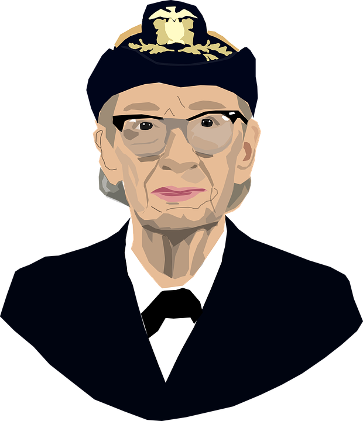
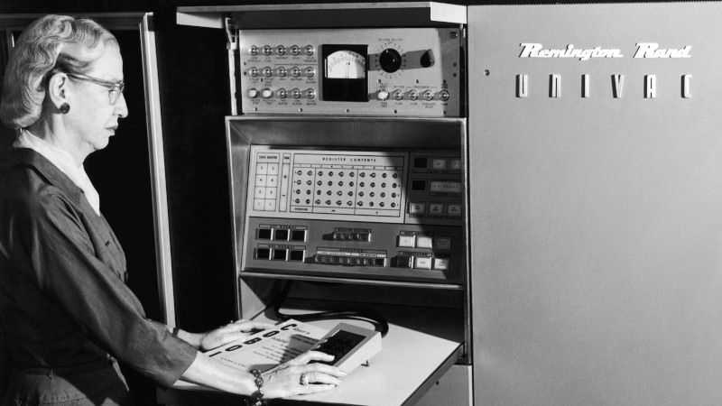

Quem foi Grace Hopper?
Grace Murray Hopper (Nova Iorque, 9 de dezembro de 1906 — Condado de Arlington, 1 de janeiro de 1992) foi almirante e analista de sistemas da Marinha dos Estados Unidos nas décadas de 1940 e 1950, criadora da linguagem de programação de alto nível Flow-Matic (em desuso) — base para a criação do COBOL — e uma das primeiras programadoras do computador Harvard Mark em 1944.
Biografia
Antes da Marinha, Hopper conquistou o Ph.D. em matemática na Universidade de Yale e foi professora de matemática na Faculdade Vassar.
Tentou entrar na Marinha durante a Segunda Guerra Mundial, mas foi rejeitada por ter 34 anos. Por consequência, entrou na Navy Reserves (em tradução livre, a Reserva da Marinha).
Em 1944, começou sua carreira em computação, quando trabalhou no Mark I de Harvard no time conduzido por Howard H. Aiken. Neste período, foi co-autora de três artigos científicos baseados nesse projeto.
Em 1949, ela passou a participar do Eckert-Mauchly Computer Corporation e fez parte do time que desenvolveu o computador UNIVAC I. Enquanto estava no Eckert-Mauchly, começou o desenvolvimento do seu compilador. O programa dela convertia termos em Inglês para código de máquina e em 1952, tinha terminado o desenvolvimento do seu programa ligador (originalmente chamado de compilador), o qual foi desenvolvido para o Sistema A-0.
Não participou efetivamente na criação da linguagem COBOL, mas de um subcomitê originado de um dos três comitês (o de Curto Prazo) propostos em uma reunião no Pentágono em Maio de 1959, que desenvolveu as especificações da linguagem COBOL. Ele era formado por seis pessoas: William Selden e Gertrude Tierney da IBM; Howard Bromberg e Howard Discount da RCA; Vernon Reeves e Jean E. Sammet da Sylvania Electric Products.
A concepção de Hopper de que havia a necessidade de se criar uma linguagem orientada para negócios comuns deu origem ao acrônimo COBOL (Common Business Oriented Language).
Tudo foi feito sem definir os comandos para minimizar melindres entre os técnicos das empresas convocadas a participar da criação de um denominador comum entre todos os fabricantes existentes na época. Grace Hopper participou contribuindo com a abertura dos comandos FLOW-MATIC.
É dito que é de autoria de Hopper o termo "bug" usado para designar uma falha num código-fonte. Quando procurava um problema em seu computador; percebeu que havia um inseto morto no computador causando transtorno, desde então o termo bug passou a ser usado.
Mas existem outras versões que contradizem a origem verdadeira do termo "bug". Uma das versões é de Thomas Edison que casualmente tem muita semelhança com a história da analista. Um inseto que causou problemas de leitura em seu fonógrafo em 1878
Em 1998 recebeu a honra de ter seu nome em um navio da Marinha. O contratorpedeiro USS Hopper entrou no serviço ativo em 1998. Além disso, o supercomputador da NERSC foi nomeado em sua homenagem, chamando Cray XE6 "Hopper". Durante a sua vida, ela recebeu 40 diplomas honorários de universidades ao redor do mundo. Uma faculdade na Universidade de Yale foi renomeada em sua homenagem. Em 1991 recebeu uma Medalha Nacional de Tecnologia e no dia 22 de Novembro de 2016 foi postumamente premiada com a Medalha Presidencial de Liberdade pelo Presidente Barack Obama.
Infância e Educação
Grace Murray nasceu na cidade de Nova Iorque, sendo a mais velha de três irmãos. Seus pais, Walter Fletcher Murray e Mary Campbell Van Horne, eram de descendência Escocesa e Holandesa e cursaram o West End Collegiate Church. Seu bisavô, Alexander Wilson Russell, um almirante da Marinha Americana, lutou na Batalha da Baía de Mobile, durante a Guerra de Secessão.Foi sempre foi uma criança curiosa, um traço que a marcou pela vida. Aos sete anos decidiu descobrir como funcionava um despertador. Desmontou sete despertadores antes que sua mãe percebesse o que estava fazendo - aí Grace foi autorizada a mexer em apenas um despertador.Grace Hopper foi à Hartridge School em Plainfield, Nova Jersei. Foi inicialmente rejeitada no processo de admissão no Vassar College aos 16 anos (suas notas em latim eram baixas), sendo admitida no ano seguinte. Graduou-se em 1928 como bacharel em Matemática e Física e, em 1930, concluiu seu mestrado na Yale University. Em 1934, também na Yale University, conquistou seu Ph.D. em Matemática sob a orientação de Øystein Ore.A dissertação dela "Novos Critérios de Irredutibilidade" foi publicada no mesmo ano. Começou a ensinar Matemática no Vassar em 1931 e foi promovida a professora associada em 1941.
Foi casada com um professor da Universidade de Nova Iorque, Vincent Foster Hopper (1906–1976) de 1930 a 1945, quando se divorciou dele.Nunca se casou novamente, mas manteve o sobrenome Hopper.
Carreira
Segunda Guerra Mundial
Hopper tentou se alistar na Marinha no começo da Segunda Guerra Mundial, mas foi rejeitada por algumas razões. Com 34 anos, ela era muito velha para se alistar e o seu Índice de Massa Corporal (IMC) era muito baixo. Outra razão foi a determinação de que o seu emprego como matemática e professora de matemática na Faculdade Vassar eram valioso demais para o esforço da guerra.Em 1943, Grace tirou uma licença de Vassar e foi empossada na Marinha dos Estados Unidos. Foi uma das várias mulheres a se voluntariar no WAVES. Precisou de uma autorização excepcional para alistar-se, pois estava 6,8 kg abaixo do peso mínimo exigido pela Marinha (54 kg). Apresentou-se em Dezembro, e treinou na Escola Naval Reserve Midshipmen's do Smith College em Northampton, Massachusetts. Formou-se em 1944 como a primeira da turma e foi designada para a Bureau of Ships Computation Project da Harvard University como tenente júnior.Ela serviu na equipe de programação Mark I computer dirigida por Howard H. Aiken. Hopper e Aiken escreveram três artigos sobre o Mark I, também conhecido como a Calculadora Automática Controlada por Sequência. O pedido de transferência de Hopper para a Marinha regular no final da guerra foi recusado devido à sua idade (38 anos). Continuou a servir na Reserva da Marinha e permaneceu no Laboratório de Computação de Harvard até 1949, recusando uma cátedra em Vassar para trabalhar como pesquisadora num contrato da Marinha na Harvard University.
UNIVAC
Em 1949, Grace Hopper tornou-se empregada da corporação Eckert-Mauchly Computer como matemática sénior e compôs a equipa de desenvolvimento UNIVAC I. Ela também serviu como diretora do UNIVAC de Desenvolvimento Automático de Programação para Remington Rand. O UNIVAC foi o primeiro computador eletrônico de larga escala conhecido a estar no mercado em 1950 e era mais competitivo em processamento de informação do que o Mark.Quando Hopper recomendou o desenvolvimento de uma linguagem de programação que usaria palavras inteiramente em Inglês, ela "foi informada rapidamente que [ela] não conseguiria fazer isso porque computadores não entenderiam Inglês". Mesmo assim, ela persistiu. "É muito mais fácil para muitas pessoas escreverem uma declaração em Inglês do que utilizar símbolos," ela explicou. "Então eu decidi que processadores de dados deveriam conseguir escrever seus programas em Inglês, e que computadores traduziram eles para código de máquina".A sua ideia não foi aceita por 3 anos. Enquanto isso, ela publicou o seu primeiro artigo científico sobre o assunto, compiladores, em 1952. No começo dos anos 1950 a empresa em que trabalhava foi incorporada pela empresa Remington Rand e foi nesse período que desenvolveu seu compilador, que ficou conhecido como O COMPILADOR e sua primeira versão foi em A-0.Em 1952 teve um compilador operacional, o qual na época era referido como um compilador. Posteriormente, ela disse que "Ninguém acreditava nisso," e disse que "tinha um compilador rodando e ninguém o tocava. Eles me diziam que computadores apenas podiam fazer aritmética".Ela vem falar que o seu compilador "traduzia manipuladores. Poucas pessoas são realmente manipuladores de símbolos. Então decidi que processadores de dados deveriam conseguir escrever programas em inglês, e que computadores iriam traduzir traduzi-los para linguagem de máquina. Esse foi o começo de COBOL, a linguagem de computação para processadores de dados. A ideia seria que poderia dizer "subtraia a taxa do pagamento" ao invés de tentar escrever isso em código octal ou usando diversos símbolos.Em 1954, Hopper foi nomeada a primeira diretora de programação automática, e seu departamento divulgou algumas das primeiras linguagens de programação baseadas em compilador, incluindo ARITH-MATIC, MATH-MATIC e FLOW-MATIC. COBOL
Na primavera de 1959, especialistas da industria e do governo juntaram-se em uma conferência que durou dois dias conhecida como a Conference on Data Systems Languages (CODASYL). Hopper foi consultora técnica para a comitê, e muitos dos seus funcionários contribuíram para a curto prazo na comitê que definiu a nova linguagem COBOL (um acrônimo para COmmon Business-Oriented Language). A nova linguagem estendeu a linguagem FLOW-MATIC de Hopper com algumas da equivalente da IBM, o COMTRAN. Ela acreditava que programas deveriam ser escritos na linguagem mais próxima do Inglês (ao invés de código de máquina ou em linguagens próximas de código de máquina, como a Linguagem Assembly) foi capturado na nova linguagem de negócio, e COBOL se tornou a linguagem de negócio mais onipresente até a atualidade. Dentre os membros da comitê que trabalhavam com COBOL foi o ex-aluno Jean E. Sammet da faculdade Mount Holyoke College. De 1967 até 1977, Hopper trabalhou como diretora do Grupo de Linguagens de Programação da Marinha no Escritório de Planejamento de Sistemas de Informações da Marinha e foi promovida para a posição de capitã em 1973. Ela desenvolveu validação de software para COBOL e o seu compilador como parte do programa de uniformização do COBOL para toda a Marinha.Padrões
Nos anos de 1970, Hopper defendeu para que o Departamento de Defesa substituísse grandes, centralizados sistemas com redes de pequenos computadores distribuídos. Como qualquer usuário de qualquer node de computador conseguia acessar bases de dados comuns localizadas na rede.Ela desenvolveu a implementação de padrões para testar sistemas de computadores e componentes, principalmente para as linguagens de programação FORTRAN e COBOL. Os testes da Marina de conformidade em relação a esses padrões levaram a convergências significativas entre os dialetos de linguagens de programação dos vendedores dos principais computadores. Já nos anos de 1980, esses teste, e a sua administração oficial, foram assumidos pelo Escritório Nacional de Padrões (NBS), conhecido atualmente como o Instituto Nacional de Padrões e Tecnologia (NIST).Aposentadoria
De acordo com os regulamentos de atrito da Marina, Hopper se aposentou da Reserva da Marina com o cargo de comandante com 60 anos no final de 1966.Ela foi chamada novamente para dever ativo em Agosto de 1967 por seis meses que se transformou em indefinido. Ela se aposentou novamente em 1971 mas foi chamada novamente em 1972. Ela foi promovida para capitã em 1973 pelo Admiral Elmo R. Zumwalt, Jr.Depois que o Representante Republicano Philip Crane viu ela em um segmento Março 1983 de 60 Minutes, ele forneceu patrocínio à H.J.Res. 341, uma resolução colaborativa originada na Câmera de Representantes, a qual levou a promoção dela em 15 de Dezembro de 1983 por nomeação especial Presidencial pelo Presidente Ronald Reagan.